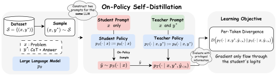
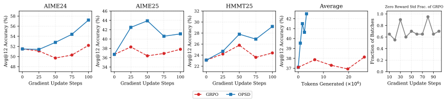
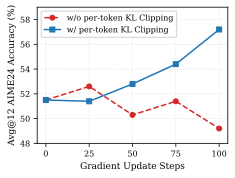
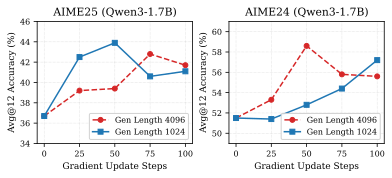

自蒸馏推理器：
面向大型语言模型的同策略自蒸馏
摘要
知识蒸馏通过压缩教师大型语言模型（LLM）的知识来训练更小的 LLM，从而提升 LLM 的推理能力。同策略蒸馏推进了这一方法：它让学生模型采样自己的轨迹，同时由教师 LLM 提供密集的词元级监督，从而解决离策略蒸馏方法中训练与推理之间的分布失配问题。然而，同策略蒸馏通常需要一个独立的、往往更大的教师 LLM，并且没有显式利用推理数据集中可用的真实答案。受这样一种直觉的启发——一个足够有能力的 LLM 能够对外部特权推理轨迹进行合理化，并教导它较弱的自身——我们引入了 同策略自蒸馏（OPSD），这是一种学习算法，其中单个 LLM 在不同上下文下同时充当教师和学生。教师策略以特权信息（例如已验证的推理轨迹）为条件，而学生策略只看到问题；训练在学生对自身采样轨迹上最小化这些分布之间的逐词元散度。我们在多个数学推理基准上展示了我们方法的有效性，相比强化学习方法取得了更优的词元效率，并且相比离策略蒸馏方法取得了更好的性能。代码仓库：https://github.com/siyan-zhao/OPSD。
1 引言

大型语言模型（LLM）的近期进展在推理和指令遵循方面展示了令人印象深刻的能力。在训练后阶段获得这些能力通常依赖于强化学习方法，例如带可验证奖励的强化学习（RLVR）（如 GRPO (Shao et al., 2024; Guo et al., 2025; Team et al., 2025; Rastogi et al., 2025; Yu et al., 2025)）、在高质量推理数据集上的监督微调（SFT）(Guha et al., 2025; Team et al., 2025; Xiaomi, 2026)，或知识蒸馏，近期工作已表明从先进教师模型进行蒸馏在性能和训练效率上都能超越 RL (Yang et al., 2025; Xiaomi, 2026; Lu and Lab, 2025)。
尽管各自取得了成功，每种方法都有其固有的局限性。RLVR 存在低效问题，包括：（1）针对每个提示采样一组回答计算代价高昂，并且可能在对真实价值函数进行估计时引入高方差；此外，当所有样本要么正确要么错误时，梯度信号会消失 (Yu et al., 2025; Zhao et al., 2025)；（2）奖励信号是稀疏的，且均匀施加于生成输出中的所有词元，忽略了细粒度的词元级反馈。监督微调存在暴露偏差和泛化能力较弱的问题 (Agarwal et al., 2024; Chu et al., 2025)。传统知识蒸馏提供来自教师模型的密集词元级监督，但依赖离策略数据 (Hinton et al., 2015)。同策略蒸馏的近期进展——学生模型采样自己的轨迹，而教师策略提供密集词元级监督——通过结合同策略训练的分布真实性与密集反馈，展示了更优的样本效率 (Agarwal et al., 2024; Lu and Lab, 2025)。
虽然同策略蒸馏已展现出强劲性能，但它依赖一个单独的教师模型来监督学生。鉴于现代 LLM 已展现出强大的推理能力，我们提出这一研究问题：一个模型能否通过自蒸馏有效地充当自己的教师？ 我们的方法受人类学习的启发：在错误地解决一个问题后，学生可以查看正确解法，对其步骤进行合理化，并找出自己推理失败之处。先前工作已表明，对于 LLM，评估通常比生成更容易 (Sun et al., 2024; Naor, 1996)。我们假设 合理化——解释一个给定的正确答案——同样比生成更容易。受此启发，我们从单个 LLM 实例化教师策略和学生策略。教师策略被提供特权信息 ，例如真实答案或参考思维链，而学生策略仅以问题 为条件。具体而言，教师策略 以问题和特权答案为条件，而学生策略 只观察问题。我们通过仅从学生策略采样轨迹 来保持同策略训练范式，学生随后从特权教师策略获得密集的词元级监督。
因此我们提出 同策略自蒸馏（OPSD），这是一个由单个模型同时扮演教师和学生角色的框架。学生采样自己的轨迹 ；然后我们计算学生与教师分布之间的逐词元散度，并在学生自己的采样轨迹上最小化它。这一形式（i）使用同策略监督（学生自己的轨迹），（ii）提供密集的逐词元反馈，（iii）利用真实答案 ，（iv）不需要单独的教师模型。这一学习过程由以下损失刻画
| (1) |
总之，我们的贡献如下：
-
•
我们引入了同策略自蒸馏（OPSD），这是一个新颖的框架，使单个模型能够同时充当教师和学生，利用真实答案在学生采样轨迹上提供密集的词元级监督。
-
•
我们引入了一种逐词元的逐点 KL 裁剪机制，以稳定训练并提升性能，因为我们发现风格类词元可能主导数学词元的训练信号。
-
•
我们在三个竞赛级数学推理任务上评估 OPSD，表明它以显著提升的词元效率达到了与 GRPO 相当的性能，并优于监督微调。
-
•
我们分析了不同散度目标的影响、学生生成长度的影响，以及学生与教师的生成风格。
| SFT/Off-Policy | GRPO | On-Policy | On-Policy | |
|---|---|---|---|---|
| Distillation | Distillation | Self-Distillation (Ours) | ||
| On-Policy Data | ✗ | ✓ | ✓ | ✓ |
| Dense Learning Signal | ✓ | ✗ | ✓ | ✓ |
| Low Sampling Cost | ✓ | ✗ | ✓ | ✓ |
| No External Teacher | ✓ | ✓ | ✗ | ✓ |
2 背景
2.1 面向自回归大型语言模型的知识蒸馏
知识蒸馏通过训练学生模型模仿教师模型的行为，将知识从较大的教师模型迁移到较小的学生模型 (Hinton et al., 2015; Kim and Rush, 2016; Sanh et al., 2019)。其核心洞见在于，教师对各类别的软概率分布比仅用硬标签包含更丰富的信息，因为它揭示了教师学到的类别间相似性。对于自回归语言模型，给定一个数据集 ，其中 表示输入， 是对应的参考输出，教师 和学生 都定义了词汇表 上的词元级分布。传统监督蒸馏在固定数据集上最小化教师与学生分布之间的平均散度 ：
| (2) |
其中 度量逐词元的差异。然而，这种离策略方法存在分布失配：学生在推理时的自回归生成过程中遇到的部分序列 与在固定数据集上训练时所见的不同，导致误差累积。同策略蒸馏 (Agarwal et al., 2024; Lu and Lab, 2025; Xu et al., 2024a) 通过在学生自己生成的序列 上训练学生来解决这一问题，在这些同策略样本上从教师获得密集的词元级反馈：
| (3) |
这种方法将蒸馏与模仿学习 (Ross et al., 2011) 联系起来，学生通过从教师对其自身输出的指导中学习来迭代改进，结合了强化学习的同策略相关性与监督学习的密集奖励信号，从而在保持计算效率的同时缓解暴露偏差。
2.2 带可验证奖励的强化学习
带可验证奖励的强化学习（RLVR）已成为大型语言模型训练后的一种流行方法，特别是在结果易于验证的任务（如数学和编程）上，使用近端策略优化（PPO）(Schulman et al., 2017) 和组相对策略优化（GRPO）(Shao et al., 2024) 等算法。
GRPO 的训练方式是采样一组 个回答 ，这些回答来自当前策略 ，且每个问题 都分别采样这样一组回答。每个回答 获得一个表示正确与否的二元奖励 。该方法随后为所有词元 （位于回答 内）分配优势，使用的组归一化奖励为：
| (4) |
这一形式可以从价值函数的角度理解： 是一个基于 个样本的蒙特卡洛估计，所估计的价值函数为 ，而稀疏的二元奖励 表示（未折扣的）状态-动作价值 。关键在于，一个回答内的所有词元共享相同的优势，因为奖励信号仅在序列级别提供。GRPO 目标包含一个裁剪的替代损失以调节策略更新，以及一个反向 KL 惩罚以防止过度偏离参考策略：
| (5) |
其中 是重要性比率， 是更新前的策略， 控制裁剪范围。
虽然 RLVR 方法已展现出强大的经验性能，但它们面临两个关键局限：（1）奖励信号稀疏，仅提供序列级反馈而非关于错误发生位置的词元级指导；（2）当所有采样回答获得相同奖励（全部正确或全部错误）时，优势变为零，尽管采样计算代价高昂，却无法进行任何策略更新。
3 方法
学生提示
问题：求 在 处的导数
答案：
教师提示
问题：求 在 处的导数
以下是一个参考解法：
首先求 ，然后在 处求值：
在理解参考解法后，请尝试在下方用你自己的方法解决这个问题：
答案：
3.1 从可验证推理数据集中学习
我们考虑一个由问题-解答对组成的数据集 其中每个 表示一个问题， 是对应的参考解答，其中可能包含思维链推理。为简洁起见，我们省略样本索引 ，并使用 表示数据集中的通用样本。我们可以通过不同方式从该数据集中利用学习信号：对 进行标准监督微调（SFT）可以看作使用专家轨迹的离策略蒸馏/模仿学习，但它存在训练与推理之间的分布不匹配问题。基于可验证奖励的强化学习（RLVR），例如 GRPO，通过在策略样本上进行优化，并将生成的答案与 比较来分配二元奖励，从而解决这一问题。然而，RLVR 计算开销大且奖励信号稀疏，无论错误出现在何处，都会为所有词元提供相同的反馈。或者，可以训练过程奖励模型（PRM），在 RL 期间提供稠密的词元级反馈。然而，获取用于 PRM 训练的标签成本过高且难以扩展 (Lightman et al., 2023; Zhang et al., 2025)。同策略蒸馏 (Agarwal et al., 2024; Xu et al., 2024a; Lu and Lab, 2025) 通过在学生模型自身的样本上进行训练来解决分布偏移问题，但需要单独的、通常更大的教师模型来提供监督。我们转而寻求一种 稠密、同策略，且 不需要外部教师或奖励模型 的训练信号。这促使我们提出同策略自蒸馏方法。我们在表 1 中总结了这些方法的差异。
3.2 同策略自蒸馏
动机：通过理解解答来学习。
我们受学生如何学习的启发提出一个不同的视角：当学生遇到难题时，与其进行漫长的试错，不如查看解答、理解推理过程，并将该方法内化。类似地，如果模型能够访问正确答案或推理 且能力足够强，它就可以将推理步骤合理化并自我教学——这类似于学生回顾解答并追溯其为何有效。这一直觉启发了我们的框架：我们在训练期间直接将真实解答 作为特权信息加以利用，使模型能够充当自己的教师，而无需外部奖励模型或更大的教师模型。
教师策略与学生策略。
我们通过改变条件上下文，从同一个语言模型 实例化两个条件分布。教师策略以特权信息为条件——即问题 和参考解答 ：
学生策略仅观察问题陈述，与推理时的条件相匹配：
两个策略共享相同的参数 ，仅在条件上下文上有所不同。为了鼓励教师自然地评估学生的生成，我们在教师看到参考解答后添加一个提示，要求其生成新的解答，如 Figure 2 所示。然而，教师并不生成词元，它仅通过预填充隐式地进行合理化。
从学生模型进行同策略采样。
给定问题 ，学生模型生成同策略回复
随后两个策略都评估该学生生成的轨迹。在每个位置 ，它们诱导出下一词元分布，该分布定义于 上，并以相同的学生前缀为条件：
其中 。
训练目标：全词表 logit 蒸馏。
我们实例化一个 全词表散度目标，使教师和学生在每个位置的下一词元分布相匹配。给定学生生成的序列 ，定义轨迹平均的逐词元散度
| (6) |
其中 和 表示关于下一词元 的分布。这里， 可以是任意分布散度度量，例如 广义 Jensen-Shannon 散度 ，对于权重 定义为：
| (7) |
其中 是插值混合分布。这种全词表公式提供了稠密的词元级反馈：教师模型在 的引导下，让学生模型接触关于合理下一词元的整个分布，并引导其走向通向正确答案的推理路径。
我们最小化在同策略学生样本上教师与学生之间的期望散度：
| (8) |
梯度仅通过学生策略 反向传播，而教师 作为以特权信息 为条件的固定全分布目标。
逐词元逐点散度裁剪。
在实验中，我们观察到词元级散度在词表条目之间高度偏斜：一小部分风格性词元表现出比具有数学意义的词元高得多的散度（见表 5）。这种不平衡导致训练信号被风格模式所主导。为此，我们对词表级散度贡献应用逐点裁剪。令 表示 -散度。在每个词元位置 和词表条目 处，定义：
我们计算裁剪后的散度：

| Method | AIME24 | AIME25 | HMMT25 | Average |
|---|---|---|---|---|
| Qwen3-8B | ||||
| Base (Instruct) | 75.8 | 65.6 | 43.9 | 61.8 |
| + SFT | 72.3 | 64.2 | 42.9 | 59.8 |
| + GRPO | 76.4 | 68.9 | 46.7 | 64.0 |
| + OPSD | 77.8 | 70.8 | 45.8 | 64.8 |
| Qwen3-4B | ||||
| Base (Instruct) | 74.9 | 66.4 | 42.2 | 61.2 |
| + SFT | 70.2 | 62.3 | 43.4 | 58.6 |
| + GRPO | 75.6 | 68.1 | 44.4 | 62.7 |
| + OPSD | 76.4 | 68.3 | 46.1 | 63.6 |
| Qwen3-1.7B | ||||
| Base (Instruct) | 51.5 | 36.7 | 23.1 | 37.1 |
| + SFT | 48.4 | 36.3 | 22.7 | 35.8 |
| + GRPO | 51.1 | 38.3 | 23.7 | 37.7 |
| + OPSD | 57.2 | 43.9 | 29.2 | 43.4 |
替代目标：通过策略梯度的采样词元蒸馏。
遵循近期的同策略蒸馏方法 (Lu and Lab, 2025)，我们构造采样词元奖励信号（对采样动作的反向 KL 信号），并用策略梯度优化。对于每个位置 ，它位于采样序列 中，定义优势项
并优化策略梯度风格的目标
| (9) |
相对于 被视为常数（即梯度不流经优势项），因此梯度呈现通常的策略梯度形式 。与全词表散度目标相比，这一同策略塑形目标仅在采样词元上操作，利用教师的对数概率提供稠密的轨迹级塑形信号，而无需在每一步显式匹配完整分布。
OPSD 作为稠密奖励策略梯度及其与 STaR 的比较。
Equation 9 中的目标可以看作带稠密词元级奖励的策略梯度。在附录 Appendix D 中，我们对此进行形式化，并与 STaR (Zelikman et al., 2022) 进行对比，后者是一个密切相关的方法，同样使用同一模型生成推理轨迹，然后执行拒绝采样，并对正确轨迹进行 SFT。这一过程可以看作带序列级二元奖励的策略梯度，它为所有词元分配相同的信用，并在样本不正确时消失。相比之下，无论最终答案是否正确，OPSD 都会在每个词元位置提供反馈。
4 实验
我们进行了全面的实验，以回答以下研究问题：
4.1 实验设置
模型和数据集。 我们在三个规模上使用 Qwen3 (Team, 2025b) 模型系列进行实验：Qwen3-1.7B、Qwen3-4B 和 Qwen3-8B，使用指令微调版本。对于训练数据，我们使用 OpenThoughts (Guha et al., 2025) 的数学推理子集，最多采样 30K 个带思维链推理的问题-解答对。我们在竞赛级数学基准上评估，包括 AIME 2024、AIME 2025、HMMT 2025。
基线。 我们与在同一数据集上训练的两种方法进行比较：（1）SFT，对专家轨迹进行标准监督微调，可以看作从生成推理轨迹的更强大 LLM 进行离策略蒸馏；（2）GRPO (Shao et al., 2024)，带二元结果奖励的组相对策略优化，奖励根据真实答案验证。最大生成长度设为 16k。
4.2 主要结果
表 2 报告了竞赛级数学推理基准上的结果。OPSD 在所有规模上都持续优于 SFT，也优于基础模型，并在所有设置上匹配或超过 GRPO。值得注意的是，OPSD 仅对每个问题使用单次采样轨迹就取得了这些提升，并在 100 步内收敛，每个问题仅需 1024 个采样词元；而 GRPO 需要 8 次每次 16k 词元的采样轨迹，并且由于熵崩塌在后续步骤中可能出现性能下降——在该 OpenThoughts 数据集下，组内大多数奖励标准差为零，不产生学习信号并浪费采样预算。我们还观察到，在同一数据集上训练时，SFT 在不同任务和模型规模下性能一致下降，我们将其归因于真实解答的简洁推理风格在测试时缩短了推理长度。我们将 OPSD 的词元效率归因于教师分布提供的稠密词元级监督，并推测较早的词元可能对有效蒸馏贡献更大，因为它们可能代表推理过程中更关键的分支点。
如 Figure 3 所示，在 100 个训练步内，OPSD 相比 GRPO 取得了更高的词元学习效率。在 100 步内，当采样组内的结果奖励保持不变时，GRPO 的性能停滞且学习信号更少，导致梯度为零。这些结果表明，OPSD 可能比 GRPO 和 SFT 更高效地从相同推理数据集中提取学习信号，同时大幅减少训练时间。
4.3 消融研究与讨论
在本节中，我们进行了大量消融实验，以研究 OPSD 中的关键设计选择，包括（1）散度目标，（2）学生和教师的生成风格（例如思考模式开/关），（3）逐词元 KL 裁剪的效果，（4）学生生成长度的影响，以及（5）全词表 logit 蒸馏与采样词元蒸馏之间的比较。
4.3.1 散度目标的影响
OPSD 中的一个关键设计选择是用于特权教师模型与学生模型之间逐词元分布匹配的散度。我们在 AIME25 上使用 Qwen3-1.7B 在 Table 3 中比较了前向 KL、反向 KL 与 JSD。所有目标均在相同的逐点裁剪方案下评估以保证稳定性。前向 KL 始终带来最强的增益，将性能从 36.7 提升至 43.9（在步骤 50 时），并在步骤 100 时仍保持在基线之上。相比之下，反向 KL 与 JSD 带来的提升有限或为负。因此，我们在所有剩余实验中采用前向 KL。
| Method | Base | Step 50 | Step 100 |
|---|---|---|---|
| Forward KL () | 36.7 | 43.9 | 41.1 |
| Reverse KL () | 36.7 | 37.5 | 35.0 |
| JSD () | 36.7 | 36.9 | 39.0 |
4.3.2 生成风格与逐词元 KL 裁剪的影响
OPSD 中的另一个关键设计选择是学生模型与教师模型的生成风格，因为它同时决定了学生从哪些词元中学习以及教师提供的监督风格。Qwen3 模型支持两种生成模式：开启思考模式（TM-on），模型在此模式下生成自我反思的思维链词元；以及关闭思考模式（TM-off），模型在此模式下直接生成回答。为确定哪种组合能产生最有效的学习信号，我们分析了全部四种学生/教师模式配对下的前向 KL 散度 ，并将词元分为三类：数学（数字、运算符与数学关键词）、风格（推理连接词）以及其他。表 5 报告了各类别内的平均逐词元 KL。
在所有模型规模下，TM-off 学生模型搭配 TM-on 教师模型在数学词元上产生最大的 KL，表明其在数学相关词元上获得了更强的监督。所报告的 KL 值对应于每个位置上整个词表上的期望散度；如表 5 所示，该期望高度偏斜，风格类词元贡献了不成比例的大数值。这促使我们使用逐点裁剪来控制此类重尾贡献。在实证上，该配置取得了最佳的下游性能。因此，我们采用 TM-off 学生 / TM-on 教师的配置。

4.3.3 逐词元逐点裁剪的影响
4.3.4 生成长度的影响

由于我们的目标在词元级别运作（式 6），每个样本生成的词元数量直接决定了学生可获得的监督信号量。更长的序列使学生接触更多教师反馈，但也增加计算成本，并可能引入噪声或无信息的后续内容。为研究这一权衡，我们在 Qwen3-1.7B 上进行消融，将同策略采样学生回答的生成长度在 1024 与 4096 个词元之间变化，并使用全词表 logit 蒸馏。如图 5 所示，增加生成长度在两个任务上均未带来一致的提升。我们将此归因于早期词元对学习更为关键：随着学生生成变长，在给定足够长的学生前缀条件下，后续词元对教师而言变得越来越可预测，因此对后续词元施加的惩罚更少。这一现象在 (Lu and Lab, 2025) 中也有指出。
4.3.5 学习目标比较：全词表 logit 蒸馏与采样词元蒸馏
我们在式 6 中的目标定义为教师模型与学生模型分布之间的逐词元差异。在实践中，OPSD 可以两种方式实例化该目标。(1) 全词表 logit 蒸馏（如 GKD (Agarwal et al., 2024) 中那样）：对每个词元位置，我们通过完整 softmax 在整个词表上计算 ，从而在两个策略之间得到恰当的词元级 -散度。(2) 采样词元优势策略梯度目标（如 Lu and Lab (2025) 的同策略蒸馏方法中那样）：我们仅在学生实际采样的词元 处评估教师与学生的对数概率，并将反向 KL 项作为策略梯度风格损失中的标量优势。因此，第一种变体直接匹配完整的词元分布，而第二种则优化一个由教师对数概率塑造的同策略 RL 目标，而非全分布散度。我们在 Qwen3-4B 上使用蒸馏期间 2048 词元的生成预算比较了这些变体。 表 4 总结了结果。 全词表散度目标相比采样词元目标提供了一致的增益。 这表明，让学生模型接触完整的教师分布比仅依赖逐词元的同策略塑造能提供更丰富的监督。 然而，全词表计算由于需要在每个位置存储词表大小的 logits 而带来更高的峰值内存占用，这表明性能与效率之间存在权衡。
5 相关工作
LLM 自训练。
我们的工作与一系列研究表明 LLM 可以通过生成并利用自身的监督信号来改进 (Allen-Zhu and Li, 2020; Xu et al., 2024b; Chen et al., 2024; Wang et al., 2023; Sun et al., 2023; Yuan et al., 2024; Yang et al., 2024) 相连。在精神上最接近的是上下文蒸馏 (Snell et al., 2022)，它将同一底层模型同时用作教师和学生，为教师提供特权上下文，然后在不含上下文的情况下对教师的生成输出对学生进行 SFT。这可被视为离策略，其中学习信号是离散的词元序列。在推理领域，ReST (Gulcehre et al., 2023) 与 STaR (Zelikman et al., 2022) 同样依赖迭代式自训练循环——在给定提示或答案的条件下生成推理过程，按奖励或真实答案进行过滤，并在成功的轨迹上微调——这同样产生硬蒸馏；Mitra and Ulukus (2025) 将其扩展为软蒸馏。上下文编辑(Qi et al., 2025)从学生模型进行同策略采样，并表明通过最小化散度可以将上下文诱导的知识内化，并在知识编辑场景中对此进行了展示。OPSD 与这些方法的区别在于，我们针对推理任务在学生模型自身的采样轨迹上执行同策略、软蒸馏：教师的监督是逐词元分布匹配，而非为 SFT 生成推理过程。OPSD 将推理能力的提升视为学习一种由数据集真实解与模型自身推理能力共同诱导的条件分布。与此同时，SDPO (Hübotter et al., 2026) 探索了以环境反馈作为特权信息的类似算法，SDFT (Shenfeld et al., 2026) 则在持续学习任务上探索了同策略自蒸馏。
同策略蒸馏方法直接在学生模型自身策略采样的轨迹上训练学生模型，同时教师模型通过基于 KL 的正则化或相关目标提供逐词元指导 (Agarwal et al., 2024; Xu et al., 2024a; Gu et al., 2024; Lu and Lab, 2025; Xiaomi, 2026; Yang et al., 2025)。 这些方法通过直接在学生模型的访问分布上优化来缓解分布偏移，但它们通常依赖一个不同的、往往更大的教师模型。 在本工作中，我们探索 LLM 能否通过以更具特权的答案信息为条件，并利用自身的推理能力来指导一个较弱的自身版本走向更好的推理，从而实现自我教学。 同策略训练范式也被广泛用于机器人与深度强化学习中，例如 DAgger (Ross et al., 2011)，其中人类教师在学生策略访问的状态上提供纠正性监督。
通过 SFT 与 RL 提升 LLM 推理能力。 SFT 与 RL 是提升 LLM 推理能力的两种主要方法。 在高质量推理轨迹上进行 SFT 已展现出强劲的性能 (Yu et al., 2023; LI et al., 2024; Paster et al., 2023; Team, 2025a; Ye et al., 2025; Muennighoff et al., 2025; Zhou et al., 2023)。 然而，先前工作表明 SFT 可能依赖记忆而非稳健的泛化 (Chu et al., 2025)。 相比之下，直接针对基于结果的目标进行优化的 RL 可以展现出更好的泛化能力 (Huan et al., 2025)。 GRPO (Guo et al., 2025; Shao et al., 2024) 等较新的算法通过从组级奖励中估计优势，实现了可扩展的 RL，而无需像 PPO (Schulman et al., 2017) 中那样需要显式的评论家。 在这一研究方向的基础上，越来越多的研究强调了 RLVR 在推理任务上的有效性 (Yu et al., 2025; Liu et al., 2025; Yue et al., 2025; An et al., 2025; Zheng et al., 2025)。
6 结论
我们提出了同策略自蒸馏（OPSD），这是一个简单而有效的框架，用于在推理任务上对大型语言模型进行后训练。OPSD 背后的直觉是：一个能力足够强的推理 LLM 在能够获取关于推理问题答案的特权信息时，可以利用自身的答案合理化能力来评估未获取真实答案的较弱自身版本，从而实现自我教学。我们通过实验表明，OPSD 取得了优于离策略蒸馏/SFT 的性能，与 GRPO 相当或更优，同时展现出显著优于 GRPO 的样本效率。
7 影响声明
本文所呈现的工作旨在推进机器学习领域的发展。我们的方法提升了推理任务中语言模型训练的效 率，相比现有的强化学习方法降低了计算成本。我们未预见到具体的负面社会后果。
参考文献
- On-policy distillation of language models: learning from self-generated mistakes. In The twelfth international conference on learning representations, Cited by: §1, §2.1, §3.1, §4.3.5, Table 4, §5.
- Towards understanding ensemble, knowledge distillation and self-distillation in deep learning. In The Eleventh International Conference on Learning Representations, Cited by: §5.
- POLARIS: a post-training recipe for scaling reinforcement learning on advanced reasoning models. External Links: Link Cited by: §5.
- Self-play fine-tuning converts weak language models to strong language models. In International Conference on Machine Learning, pp. 6621–6642. Cited by: §5.
- Sft memorizes, rl generalizes: a comparative study of foundation model post-training. arXiv preprint arXiv:2501.17161. Cited by: §1, §5.
- MiniLLM: knowledge distillation of large language models. In ICLR, Cited by: §5.
- OpenThoughts: data recipes for reasoning models. External Links: 2506.04178, Link Cited by: §1, §4.1.
- Reinforced self-training (rest) for language modeling. arXiv preprint arXiv:2308.08998. Cited by: §5.
- Deepseek-r1: incentivizing reasoning capability in llms via reinforcement learning. arXiv preprint arXiv:2501.12948. Cited by: §1, §5.
- Distilling the knowledge in a neural network. External Links: 1503.02531, Link Cited by: §1, §2.1.
- LoRA: low-rank adaptation of large language models. In International Conference on Learning Representations, External Links: Link Cited by: §4.1.
- Does math reasoning improve general llm capabilities? understanding transferability of llm reasoning. arXiv preprint arXiv:2507.00432. Cited by: §5.
- Reinforcement learning via self-distillation. arXiv preprint arXiv:2601.20802. Cited by: §5.
- Sequence-level knowledge distillation. In Proceedings of the 2016 conference on empirical methods in natural language processing, pp. 1317–1327. Cited by: §2.1.
- NuminaMath. Numina. Note: https://github.com/project-numina/aimo-progress-prize/blob/main/report/numina_dataset.pdf Cited by: §5.
- Let’s verify step by step. In The Twelfth International Conference on Learning Representations, Cited by: §3.1.
- Understanding r1-zero-like training: a critical perspective. arXiv preprint arXiv:2503.20783. Cited by: §5.
- Decoupled weight decay regularization. arXiv preprint arXiv:1711.05101. Cited by: Appendix B.
- On-policy distillation. Thinking Machines Lab: Connectionism. Note: https://thinkingmachines.ai/blog/on-policy-distillation External Links: Document Cited by: §1, §1, §2.1, §3.1, §3.2, §4.3.4, §4.3.5, Table 4, §5.
- Semantic soft bootstrapping: long context reasoning in llms without reinforcement learning. arXiv preprint arXiv:2512.05105. Cited by: §5.
- S1: simple test-time scaling. arXiv preprint arXiv:2501.19393. Cited by: §5.
- Evaluation may be easier than generation. In Proceedings of the twenty-eighth annual ACM symposium on Theory of computing, pp. 74–83. Cited by: §1.
- OpenWebMath: an open dataset of high-quality mathematical web text. External Links: 2310.06786 Cited by: §5.
- In-context editing: learning knowledge from self-induced distributions. In The Thirteenth International Conference on Learning Representations, Cited by: §5.
- Magistral. arXiv preprint arXiv:2506.10910. Cited by: §1.
- A reduction of imitation learning and structured prediction to no-regret online learning. In Proceedings of the fourteenth international conference on artificial intelligence and statistics, pp. 627–635. Cited by: §2.1, §5.
- DistilBERT, a distilled version of bert: smaller, faster, cheaper and lighter. arXiv preprint arXiv:1910.01108. Cited by: §2.1.
- Proximal policy optimization algorithms. arXiv preprint arXiv:1707.06347. Cited by: §2.2, §5.
- Deepseekmath: pushing the limits of mathematical reasoning in open language models. arXiv preprint arXiv:2402.03300. Cited by: §1, §2.2, §4.1, §5.
- Self-distillation enables continual learning. External Links: 2601.19897, Link Cited by: §5.
- Learning by distilling context. arXiv preprint arXiv:2209.15189. Cited by: §5.
- Principle-driven self-alignment of language models from scratch with minimal human supervision. In Thirty-seventh Conference on Neural Information Processing Systems, External Links: Link Cited by: §5.
- Easy-to-hard generalization: scalable alignment beyond human supervision. Advances in Neural Information Processing Systems 37, pp. 51118–51168. Cited by: §1.
- Kimi k2: open agentic intelligence. arXiv preprint arXiv:2507.20534. Cited by: §1.
- Open Thoughts. Note: https://open-thoughts.ai Cited by: §5.
- Qwen3 technical report. External Links: 2505.09388, Link Cited by: §4.1.
- Self-instruct: aligning language models with self-generated instructions. In Proceedings of the 61st annual meeting of the association for computational linguistics (volume 1: long papers), pp. 13484–13508. Cited by: §5.
- MiMo-v2-flash technical report. External Links: 2601.02780, Link Cited by: §1, §5.
- Speculative knowledge distillation: bridging the teacher-student gap through interleaved sampling. In The Thirteenth International Conference on Learning Representations, Cited by: §2.1, §3.1, §5.
- A survey on knowledge distillation of large language models. CoRR. Cited by: §5.
- Qwen3 technical report. arXiv preprint arXiv:2505.09388. Cited by: §1, §5.
- Self-distillation bridges distribution gap in language model fine-tuning. In Proceedings of the 62nd Annual Meeting of the Association for Computational Linguistics (Volume 1: Long Papers), pp. 1028–1043. Cited by: §5.
- LIMO: less is more for reasoning. External Links: 2502.03387, Link Cited by: §5.
- MetaMath: bootstrap your own mathematical questions for large language models. arXiv preprint arXiv:2309.12284. Cited by: §5.
- Dapo: an open-source llm reinforcement learning system at scale, 2025. URL https://arxiv. org/abs/2503.14476. Cited by: §1, §1, §5.
- Self-rewarding language models. In International Conference on Machine Learning, pp. 57905–57923. Cited by: §5.
- Vapo: efficient and reliable reinforcement learning for advanced reasoning tasks. arXiv preprint arXiv:2504.05118. Cited by: §5.
- Star: bootstrapping reasoning with reasoning. Advances in Neural Information Processing Systems 35, pp. 15476–15488. Cited by: §D.1, §3.2, §5.
- The lessons of developing process reward models in mathematical reasoning. arXiv preprint arXiv:2501.07301. Cited by: §3.1.
- Inpainting-guided policy optimization for diffusion large language models. arXiv preprint arXiv:2509.10396. Cited by: §1.
- Group sequence policy optimization. arXiv preprint arXiv:2507.18071. Cited by: §5.
- LIMA: less is more for alignment. In Proceedings of the 37th International Conference on Neural Information Processing Systems, pp. 55006–55021. Cited by: §5.
Appendix A 局限性与未来方向
受计算资源限制，我们的实验仅限于参数量不超过 8B 的模型。这一趋势在超过 8B 参数的规模上是否延续，仍是一个开放问题。 若干有前景的方向值得进一步研究。首先，我们当前的框架并未显式利用所生成答案的正确性验证；引入此类信号可以在分布匹配之外提供额外的学习目标。 最后，问题难度在自蒸馏中起着至关重要的作用：如果推理问题超出模型的理解阈值，即便教师模型能够访问真实解，也无法提供有意义的监督。这表明，课程学习策略——随着模型提升而逐渐增加问题难度——可以增强训练效果。探索使问题保持在模型能力前沿的自适应课程，是将 OPSD 扩展到更具挑战性的推理任务的一个重要方向。
Appendix B 实验细节
| Qwen3-1.7B | Qwen3-4B | Qwen3-8B | ||||||||
|---|---|---|---|---|---|---|---|---|---|---|
| Student | Teacher | Style | Math | Other | Style | Math | Other | Style | Math | Other |
| TM-off | TM-off | 0.68 | 0.12 | 0.11 | 0.61 | 0.06 | 0.10 | 0.56 | 0.05 | 0.11 |
| TM-on | TM-off | 0.51 | 0.10 | 0.17 | 0.41 | 0.05 | 0.18 | 0.33 | 0.05 | 0.15 |
| TM-on | TM-on | 0.51 | 0.09 | 0.08 | 0.50 | 0.04 | 0.09 | 0.42 | 0.04 | 0.08 |
| TM-off | TM-on | 0.85 | 0.14 | 0.25 | 0.92 | 0.10 | 0.29 | 0.79 | 0.06 | 0.25 |
我们在表 7、6 与 8 中提供了 SFT、GRPO 与 OPSD 实验的训练和评估配置。请注意，我们在主要的 OPSD 实验中采用关闭思考模式的学生 / 开启思考模式的教师配置。更多实验细节请参阅我们在 https://github.com/siyan-zhao/OPSD 中发布的训练代码。我们未对裁剪参数 进行调优，优化该超参数可能在更大模型相同的 100 步预算内带来进一步的性能提升。
| Parameter | GRPO | OPSD |
|---|---|---|
| Learning Rate | ||
| Effective Batch Size | 32 | 32 |
| LoRA Rank () | 64 | 64 |
| LoRA Alpha () | 128 | 128 |
| LoRA Target Modules | q_proj, k_proj, v_proj, o_proj, | |
| gate_proj, up_proj, down_proj | ||
| Max Completion Length | 16,000 | 1024 |
| Number of Generations per Prompt | 8 | 1 |
| Sampling Temperature | 1.2 | 1.1 |
| KL Coefficient () | 0.0 | – |
| Training Steps | 500 | 100 |
| Parameter | SFT |
|---|---|
| Learning Rate | |
| Effective Batch Size | 32 |
| LoRA Rank () | 64 |
| LoRA Alpha () | 128 |
| LoRA Target Modules | q_proj, k_proj, v_proj, o_proj, |
| gate_proj, up_proj, down_proj | |
| Max Sequence Length | 16000 |
| Number of Training Step | 100 |
| Parameter | Value |
|---|---|
| Max New Tokens | 38912 |
| Thinking Mode | Enabled |
| Top-p | 0.95 |
| Top-k | -1 |
| Min-p | 0.0 |
| Presence Penalty | 0.0 |
| Samples per Prompt | 12 |
| Temperature | 1.0 |
所有实验均在 8 A100 或 H100 GPU 上进行，并使用梯度检查点和 Flash Attention 2 以提高内存效率。所有训练运行均使用 AdamW (Loshchilov and Hutter, 2017) 优化器和 bfloat16 精度。对于 OPSD，除非另有说明，我们使用全词表 logit 蒸馏。
Appendix C 词元类别定义
我们使用预定义的关键词列表将词元划分为 风格 和 数学 两组。这些关键词集合用于分析风格词元和数学知识词元的逐词元 KL 散度，如 Section 4.3.1 中所述。
风格词元。
maybe, perhaps, probably, possibly, let, okay, ok, alright, hmm, wait, because, since, so, thus, hence, therefore, but, however, although, though, yet, or, alternatively, instead, otherwise, actually, really, just, simply, basically, very, quite, pretty, rather, fairly, now, then, next, first, second, finally, try, see, check, note, recall, think, idea, strategy, approach, method, way, would, could, should, might, can, huge, large, big, small, tiny, interesting, tricky, complex, simple.
数学词元。
exponential, exponent, power, powers, base, logarithm, logarithms, log, ln, compare, comparing, comparison, less, equal, larger, smaller, greater, factor, factors, prime, divisible, equation, expression, formula, inequality, rational, irrational, real, integer, coefficient, variable, constant, sum, product, difference, quotient, fraction, denominator, numerator, root, square, cube, nth, maximum, minimum, optimize, bound.
Appendix D OPSD 的策略梯度解释及其与 STaR 的比较
我们在 Equation 9 中的 OPSD 目标可以解释为一种策略梯度更新，其奖励信号是由特权信息导出的 稠密、词元级 奖励。在本节中，我们展示：(1) OPSD 可被视为稠密奖励策略梯度；(2) 我们将 OPSD 与 STaR 进行对比，表明 STaR 的学习信号是 序列级 的，而 OPSD 是 词元级 的。
D.1 STaR 作为序列级策略梯度
STaR (Zelikman et al., 2022) 可被视为对 RL 式策略梯度目标的一种近似。语言模型 在推理过程 和答案 上诱导出一个联合分布：
其中模型先采样一个潜在推理过程 ，再预测最终答案 。给定指示奖励 ，在数据集 上的期望回报为
| (10) |
应用对数导数技巧可得到策略梯度：
| (11) |
注意，指示函数会丢弃所有未导出正确答案 的采样推理过程的梯度：这对应于 STaR 中的过滤步骤。
一个局限是 STaR 的奖励是 序列级 的：二元指示 为轨迹中的所有词元提供相同的信号，不提供中间信用分配。当所有采样轨迹均不正确时，学习信号会消失。
D.2 OPSD 作为稠密奖励策略梯度
Equation 9 中的采样词元目标也可被视为一种策略梯度方法，但使用词元级奖励。固定一个训练对 ，令学生模型生成一条轨迹 。在每个位置 处，定义逐词元奖励：
该奖励衡量特权教师模型相对于学生模型对采样词元 的偏好程度。如正文所述，在计算梯度时，我们将 （等价地，优势 ）视为相对于 的常数——也就是说，在奖励计算中，我们对 和 都停止梯度。在此处理下，Equation 9 的梯度具有标准的策略梯度形式：
这对应于在同策略学生模型采样轨迹上最大化期望逐词元奖励：
该奖励是稠密的：它在每个词元位置都提供学习信号，无论最终答案是否正确。
比较。
STaR 和 OPSD 都可被理解为策略梯度方法，但它们的奖励结构存在根本差异。STaR 使用序列级指示 ，为所有词元分配相同的信号；当所有采样轨迹均不正确时，学习信号完全消失。相比之下，OPSD 在每个位置提供词元级奖励 ，即使最终答案错误也能实现细粒度信用分配。